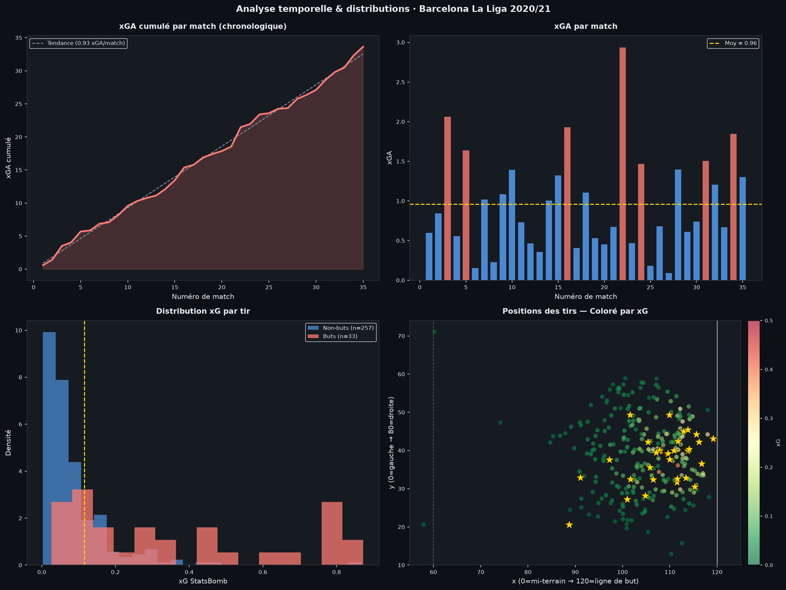
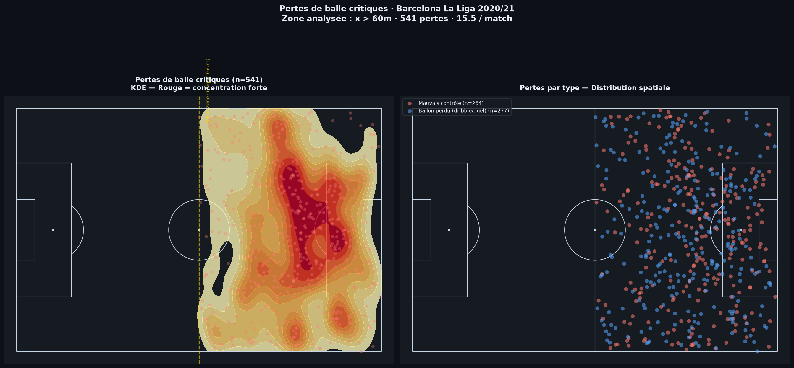
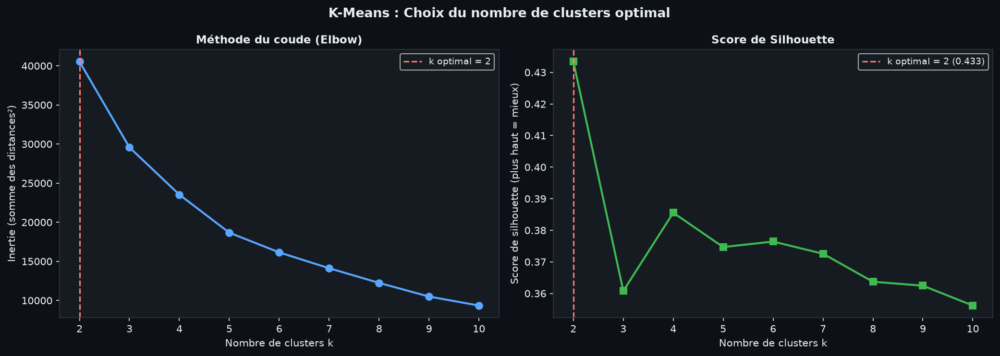
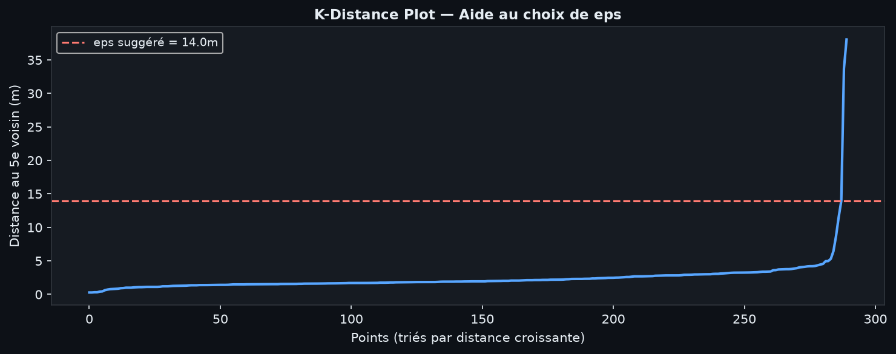
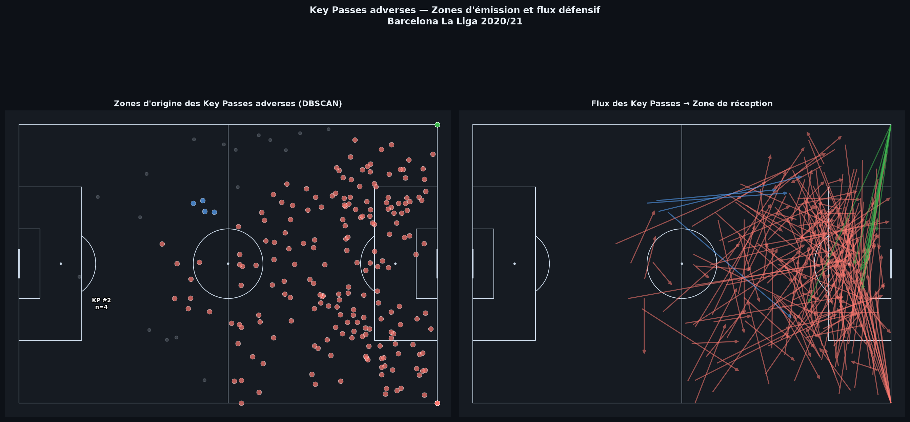

Projet : Football Defense Analyzer — Portfolio Data Science Données : StatsBomb Open Data (CC BY-SA 4.0) Méthodologie : Notebooks 03-09 — Pipeline Python complet Périmètre : 35 matchs analysés • 290 tirs concédés • xGA: 33.62 • 33 buts encaissés Généré le : 06 Juillet 2026
01. Résumé ExécutifFC Barcelona 20/21
01. Résumé Exécutif
Cette analyse couvre l'intégralité de la saison 2020/21 de Barcelone en La Liga (35 matchs, 139 000 événements StatsBomb). La méthodologie enchaîne 7 notebooks Python : pipeline événementiel (03), visualisations spatiales (04), modèle xG maison par régression logistique (05), clustering DBSCAN/K-Means (06), analyse de freeze frames (07), comparaison XGBoost vs LogReg avec SHAP (08), et architecture de connecteur API live swap-ready (09).
Objectif : Quantifier et localiser les vulnérabilités défensives pour orienter le travail tactique.
33.62xGA Total Concédé
0.96xGA par Match
290Tirs Concédés
33Buts Encaissés
35Matchs Analysés
26%Line-Break Rate
541Pertes Critiques
2.77PPDA (Pressing)
Figure 1 - Dashboard de synthèse des KPIs défensifs
Principaux Enseignements
La surface centrale concentre 26.48 xGA sur 33.62 au total (78% du danger). Différence statistiquement significative vs reste du terrain (Mann-Whitney p < 0.001).
Le Line Break Rate de 26% : 61 key passes adverses sur 235 cassent la ligne défensive (>15m de progression). Signal d'un bloc régulièrement pris à vitesse sur les transitions.
541 pertes critiques (15.5/match) dans les 40 derniers mètres. Exposition chronique aux contre-attaques.
02. Analyse Spatiale des TirsFC Barcelona 20/21
02. Heatmap des Tirs Concédés
La heatmap de gauche représente la densité brute des tirs concédés. Celle de droite pondère l'intensité par l'Expected Goal (xG) calculé par notre modèle : seules les zones où les tirs sont à la fois nombreux ET dangereux apparaissent en rouge intense. Les étoiles dorées indiquent les buts réellement encaissés.
Figure 2 - Heatmap KDE brute (gauche) vs pondérée xG (droite) • n=290 tirs • xGA=33.62 • 33 buts
Table des KPIs par Zone Tactique
Zone
Tirs
xGA total
xG moy/tir
Buts
Conv. %
Surface centrale
136
26.48
0.195
26
19.1%
Half-space droit
28
2.30
0.082
2
7.1%
Half-space gauche
31
2.10
0.068
3
9.7%
Zone distante
54
1.04
0.019
0
0.0%
03. Analyse Temporelle & PertesFC Barcelona 20/21
03. Évolution Temporelle du Danger (xGA)
Le graphique ci-dessous analyse l'évolution de la vulnérabilité barcelonaise tout au long de la saison, en comparant la tendance du xGA cumulé (progression de 0.93 xGA/match) avec la répartition des tirs et de la dangerosité.

Figure 3 - Évolution du xGA cumulé, distribution xG par tir et positions pondérées
04. Localisation des Pertes Critiques
Nous avons identifié 541 pertes de balles critiques dans les 40 derniers mètres (plus de 15 pertes par match). La visualisation par estimation de densité par noyau (KDE) souligne une forte exposition dans les couloirs et le half-space droit.

Figure 4 - KDE des pertes de balle critiques (x > 60m) et distribution spatiale par type
05. Ruptures de LignesFC Barcelona 20/21
05. Origines et Ruptures de Lignes (Key Passes)
L'analyse des passes clés adverses révèle les failles structurelles de l'organisation défensive. L'Hexmap illustre la densité spatiale des passes amenant un tir. L'Arrow Map isole les 50 passes les plus dangereuses franchissant le bloc équipe (progression > 15m).
Figure 5 - Hexmap des passes décisives adverses
Figure 6 - Arrow Map : Les 50 passes cassant la ligne défensive depuis les half-spaces
Constat : Une forte asymétrie est visible. Les half-spaces (mis en évidence en orange) sont les zones de lancement privilégiées par les adversaires. Le bloc équipe barcelonais a concédé 61 passes cassant sa ligne défensive, soulignant un manque de compacité à la perte de balle.
06. Machine Learning SpatialFC Barcelona 20/21
06. Clustering Spatial Automatique (DBSCAN vs K-Means)
Afin d'isoler mathématiquement les zones de danger sans biais humain, nous avons appliqué des algorithmes d'apprentissage non supervisé. L'algorithme K-Means a été optimisé par la méthode du coude et le score de Silhouette, tandis que le DBSCAN a été calibré via un K-Distance Plot.

Figure 7 - Optimisation de k (K-Means) via Elbow et Silhouette

Figure 8 - Calibrage du paramètre eps (DBSCAN) = 14.0m
Figure 9 - Visualisation comparative : Le DBSCAN (gauche) identifie organiquement la zone de tir la plus dense, indépendamment des formes géométriques strictes imposées par K-Means (centre).

Figure 10 - Application du DBSCAN pour identifier les hubs d'émission de passes décisives adverses.
07. ConclusionsFC Barcelona 20/21
07. Recommandations Tactiques
SÉCURISER LA SURFACE CENTRALE (Priorité Absolue)
Le modèle quantifie à 26.48 xGA le danger généré uniquement depuis l'axe de la surface de réparation (78% du xGA total). Recommandation : Augmenter la densité axiale dans les 18 mètres sur les phases de possession basse adverse. Marquage individuel strict exigé sur les joueurs atteignant des positions de tir à xG > 0.15.
GÉRER LES TRANSITIONS DÉFENSIVES
Un Line-Break Rate de 26% couplé à 15.5 pertes de balles critiques par match est le signal d'un déséquilibre structurel à la perte du ballon. Recommandation : Instaurer des exercices de repli défensif organisé immédiat (contre-pressing ou bloc médian) avec orientation forcée du porteur adverse vers l'extérieur.
ACTIVER LE PRESSING DANS LES HALF-SPACES
Les "Arrow Maps" (Fig. 6) montrent que la majorité des passes décisives trouvent leur origine dans les demi-espaces. Recommandation : Déclenchement d'un pressing latéral agressif (harcèlement) dès que le ballon pénètre ces zones pour empêcher la passe filtrante vers l'axe.
Méthodologie & Déploiement API
L'intégralité de cette analyse (Notebooks 01 à 08) repose sur le pipeline développé en Python avec les bibliothèques `statsbombpy`, `pandas`, `scikit-learn` et `mplsoccer`. Le modèle prédictif xG final utilise `XGBoost` avec interprétabilité via `SHAP`.
L'architecture logicielle de production (Notebook 09) est conçue selon le pattern "Abstract Base Class", ce qui la rend "Swap-Ready" : le flux de données peut basculer de StatsBomb vers Opta ou Wyscout sans modifier la logique d'inférence, prête pour un environnement de match en direct.